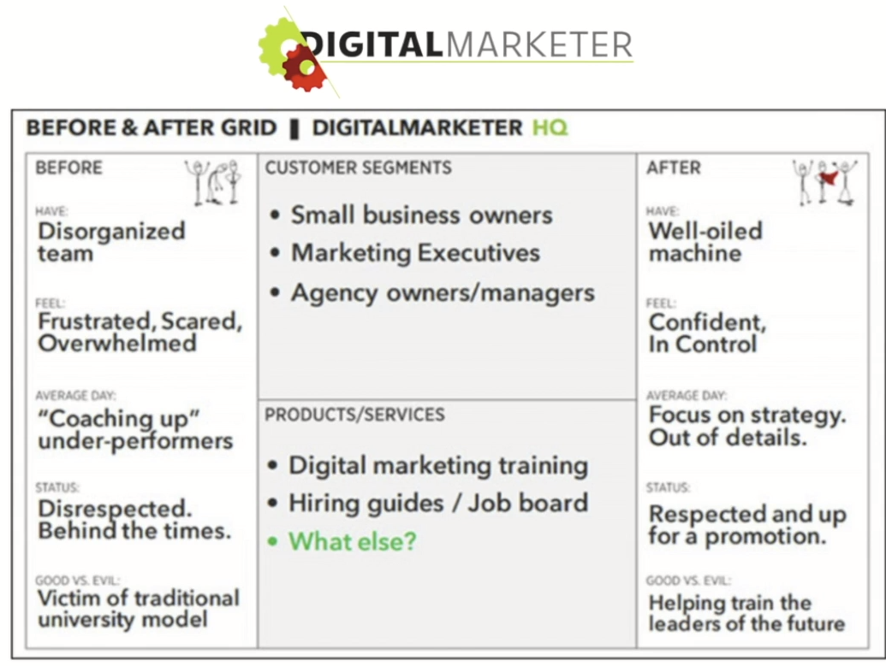

| Main goal |
Define goals |
| Customer Avatar |
Define customer type:

|
| Funnel Structure |
Top:
- Attract new targeted visitors.
Middle
- Capture and nurture leads.
Bottom
- Turn leads into customers.
|
| TOFU strategy |
- Increase visibility
- Make audience aware your company exists.
- Goal
- Attract as many targeted visitors as posible with RELEVANT content.
- TOFU Metrics:
- Sessions(or web traffic)
- % of new sessions(not just returning visitors)
- Bounce rate.
- Traffic per channel.
- TOFU Content:
- Focus on education through:
- Blog posts
- Videos
- Social Media Posts
- Infographics
- Podcasts
- etc.
- TOFU Strategies:
- Content Marketing.
- PR
- Social Media Marketing.
- Search Engine Optimisation(SEO)
- Influencers/Joint Ventures.
- Step 1:
- I Promote a product to my audience and tell them tto use my code: MAGGIE20 to get 20% off.
- Step 2:
- My audience goes and buys your product, and uses my custom code.
- Step 3:
- You track how many purchases came from this code and pay me my commission accordingly.
- Paid media.
|
| MOFU Strategy |
- Build enought trust with your audience
- That people start showing interest
- In what you have to offer.
- Goal:
- Convert as many website/social media visitors int leads as you can.
- MOFU Metrics:
- Visitor-to-lead conversion rate.
- Number of subscribers(leads)
- Email open and click rates
- Content & Strategy:
- Focus on connection and providing value through:
- Email Marketing:
- Lead magnets
- PDF Resources
- eBooks
- Free trainings
|
| BOFU Strategy |
- You've already built a sufficient level of trust with your leads.
- That they're ready to be presented with your main offer or productl.
- Overall Goal:
- Turn leads into customers.
- BOFU Metrics
- Total revenue.
- Number of new customers.
- Revenue per customer (or Customer Lifetime Value - CLTV)
- Conversion rate.
- BOFU Content:
- Focus on improving conversion and overcoming objections
through:
- Effective sales pages
- Showing off testimonials of happy customers
- Email sequences.
- Paid advertising retargeting people who viewied or
interacted with your MOFU Content.
- BOFU Strategies:
- Scarcity
- Limited time offer strategy.
- Urgency
- Countdown offer strategy.
- Upsells
- Sell features
- While having customer in buying mindset.
- e.g. Carsalesman selling car features
- Bundles
- Sell features
- While having customer in buying mindset.
- e.g. Infomercials selling features as added bonuses.
- Last ditch effort to move product.
- Presales
- Keeping customer in a cliffhanger.
- Remarketing/Retargeting
- remind customer of its intention.
- Placeholder
|
| Cater to The Buyer's Journey |
- Customer mindset:
- The time investment required.
- The $$ investment required.
- How closely your busiones model fits into what is important to them
|
| Use Metric to Build Profitability. |
- Use Metrics to Build Profitability:
- Fix the leaks.
- Self-promote and stand out
- TOFU Metrics:
- Organic:
- % of new sessions
- Bounce rate
- Traffic per channel
- Paid:
- Number of engagements
- Cost per click
- TOFU Leaks:
- Targeting the wrong buyer persona
- Irrelevant message because the right people aren't receiving the right message at the right time.
- Message is confusing.
- Website takes too long to load so people jump off straight away.
- Website content doesn't match the content that got them there.
- MOFU Metrics:
- Organic:
- Visitor to lead conversion rate.
- Number of leads.
- Email open rates.
- Email click rates.
- Paid:
- Cost per landing page view.
- Cost per conversion of a lead.
- Initiate checkouts
- Abandon carts.
- MOFU Leaks:
- Too many distractions on a form designed to capture contact information
- Call-to-action is weak and not persuasive, creating low conversion rates.
- Unqualified leads progress through the funnel.
- The leads aren't receiving the right amount or nurturing.
- BOFU Metrics:
- Organic:
- Total Revenue.
- Number of New customers.
- CLTV.
- Paid:
- Cost per conversion.
- Rate per conversion.
- Total order value
- Average order value(AOV).
- Return on ad spend(ROAS)
- BOFU Leaks:
- A messy hand-off from marketing to sales.
- Inadequate onboarding system leaves new customers confused on how to use the product or service.
- Limited follow-up
- Sales page issues.
- Not enough payment methods.
- Cost of shipping.
- MOFU Metrics
|
| Become a Tripwire Marketing Master. |
- Tripwire Marketing:
- Practice of offering leads a low-cost product
- With the intention of selling them more expensive products later.
- Ideal Tripwire:
- Less than $10
- Anything below $20 can be considered a tripwire.
- The keys to a successful tripwire:
- Closely related to the preceding free offer.
- Closely related to the ultimate high-ticket offer
- Quick win or instant gratification.
|
| Embrace Customer Value Optimization |
- Jay Abraham's 3 ways to grow a business:
- Increase the number of customers.
- Increase the average transaction value per customer.
- Increase the numbaer of transactions per customer.
- Customer Value Optimisation:
- The 7 Steps:
- Determine Product/Market Fit.
- People buy transformations(outcomes)
 - 
- Perceived Value is Magic:
- Increase distance between the before and after by increasing price
- Create a better product or service(better offer)
- Articulate the movement from "Before" to "After" differently or more clearly(better marketing)
- Choose a Traffic Source.
- Offer a Lead Magnet.
- Offer a Tripwire.
- Offer a Core Product
- Offer Profit maximizer
- Create the Return Path.
|
|
|